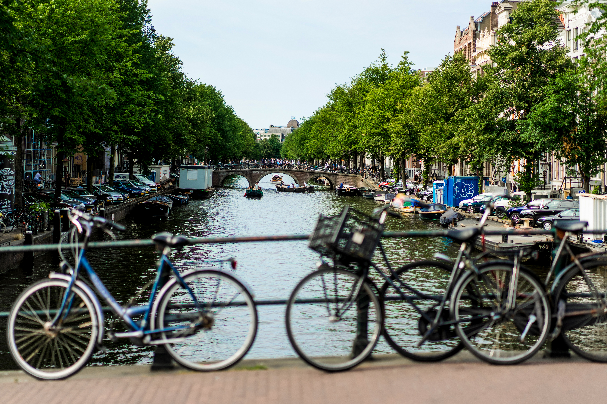

AB Bouwinspecties is ontstaan vanuit de overtuiging dat iedereen toegang moet hebben tot eerlijke en begrijpelijke bouwkundige informatie. In de praktijk zagen we te vaak dat particulieren en vastgoedpartijen beslissingen moesten nemen op basis van onvolledige of onduidelijke rapportages.
Geen vakjargon, geen verrassingen achteraf, maar heldere rapportages waar je echt iets aan hebt.

Onze werkwijze is zorgvuldig en gestructureerd. We nemen de tijd voor elke inspectie, leggen bevindingen duidelijk uit en beantwoorden alle vragen ter plaatsen.
Na de inspectie ontvang je een overzichtelijk rapport met foto's, kostenindicaties en praktische adviezen. Zo weet je precies waar je aan toe bent nu én in de toekomst.
Onze inspecteurs zijn gecertificeerd en werken volgens de geldende NIVRE- en NTA-richtlijnen. Met onze brede ervaring in bouwkundige inspecties, onderhoudsplanning en kwaliteitscontroles zien we snel waar mogelijke risico's liggen en maken we die inzichtelijk met heldere, praktische adviezen.
Onze inspecteurs werken conform de richtlijnen van het Nederlands Instituut van Register Experts.
Bouwkundige keuringen worden uitgevoerd en gerapporteerd volgens de NTA 8060 norm.
Onze rapportages voldoen aan de eisen voor de Nationale Hypotheek Garantie en het NWWI.
Wij zijn volledig onafhankelijk en staan voor objectieve, eerlijke en onpartijdige rapportages.
Wij werken voor particulieren, beleggers, makelaars, VvE's en vastgoedbeheerders. Of het nu gaat om een bouwkundige keuring, een vooropname of een funderingsonderzoek: wij zorgen voor inzicht, duidelijkheid en een rapport waar je direct mee verder kunt.